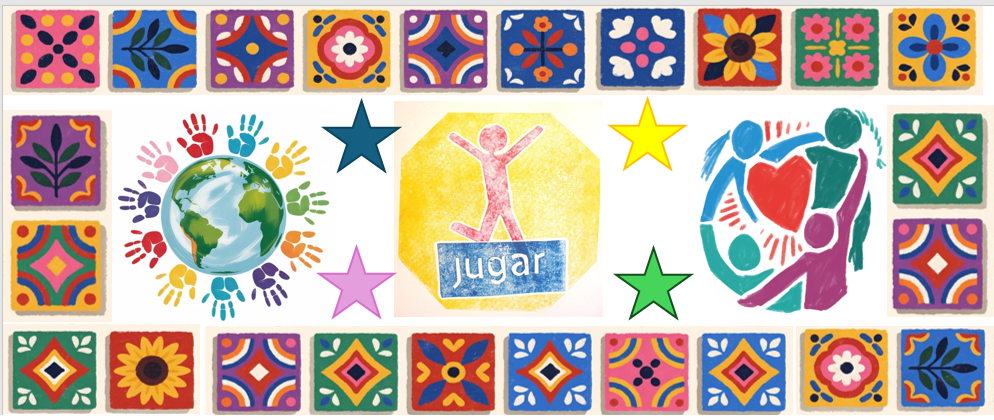
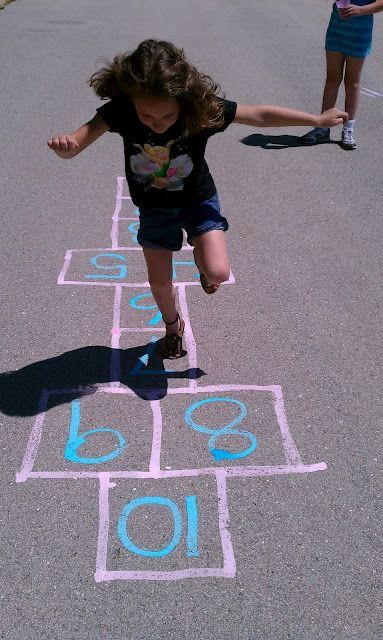
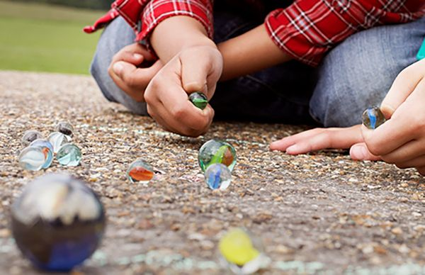
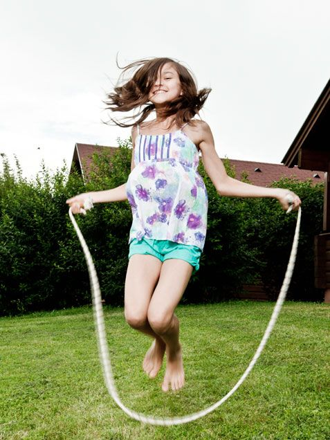
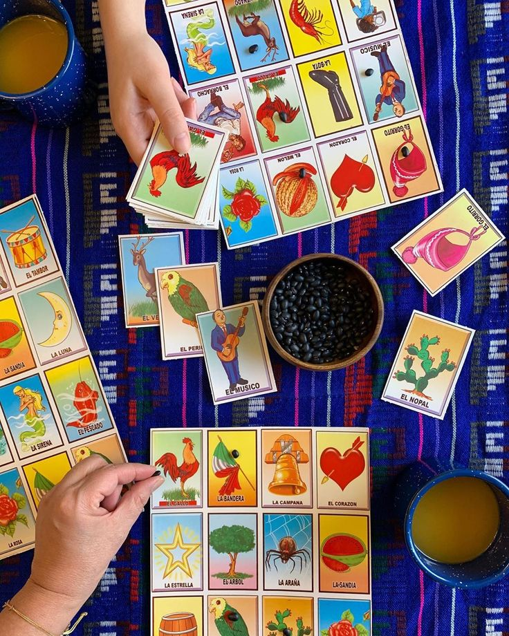
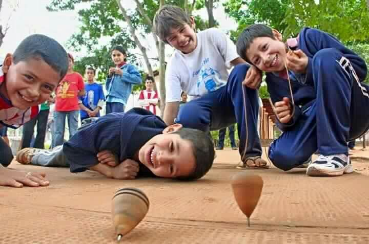
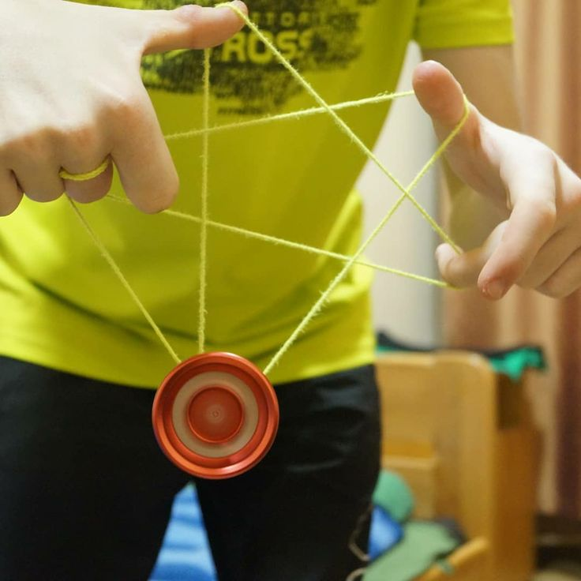
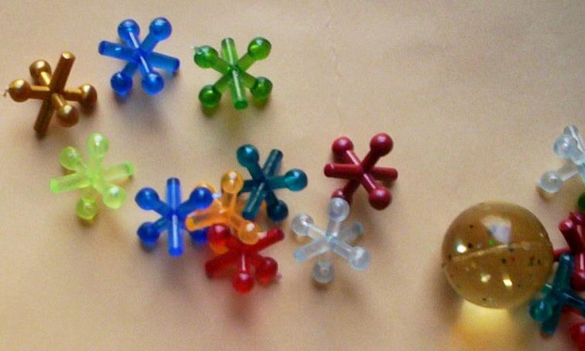
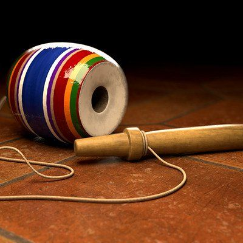
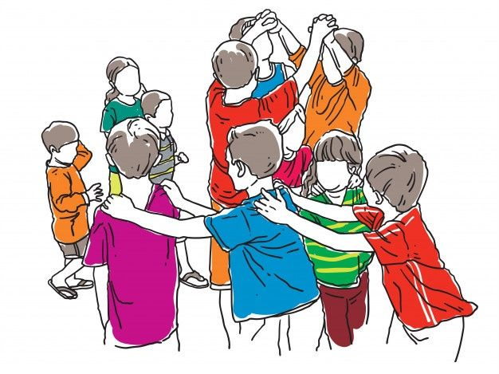

Aprendizaje
⚝
☀
ツ
❁
Datos Importantes
Aquí podras ver todo lo que aprendes y pasa en tu cuerpo mientras juegas y te diviertes con tus amigos. Recuerda que los juegos tradicionales no solo son divertidos, sino que también ayudan a desarrollar habilidades sociales, coordinación y creatividad.
- 👥 Convivencia
- ⏱️ Movilidad
- 🎯 Metas
- 🧠 Creatividad
✭
❀
♡
☺

Rayuela (Avión)
Qué aprendes (Mente y Habilidades)
- Precisión matemática: Calculas la fuerza y la distancia necesarias para que la piedra caiga exactamente dentro del cuadro correcto.
- Planificación estratégica: Decides qué pie usar y cómo estructurar el salto antes de avanzar.
- Paciencia y turno: Aprendes a esperar a que los demás completen su ronda sin desesperarte.
- Tolerancia a la frustración: Aceptas cuando la piedra pisa la línea y debes volver a empezar.
- Pensamiento espacial: Tu cerebro mapea visualmente las dimensiones de las casillas en el suelo.
Lo que pasa en tu cuerpo
- Fortalecimiento del núcleo: Mantener el equilibrio en un solo pie activa intensamente los músculos del abdomen y la espalda baja.
- Desarrollo de la propiocepción: Tu cuerpo mejora la noción de dónde está ubicado en el espacio sin necesidad de mirar fijamente tus pies.
- Potencia en piernas: Los saltos repetitivos aumentan la fuerza muscular en pantorrillas y muslos.
- Coordinación óculo-manual: Sincronizas el ojo con el movimiento de la mano al lanzar la piedra.
- Densidad ósea: El impacto controlado de los saltos estimula la salud y resistencia de tus huesos.
Beneficios sociales
- Trabajo en equipo: Aprendes a colaborar y a animar a tus compañeros.
- Comunicación efectiva: Expresas tus estrategias y escuchas las de los demás.
- Respeto por reglas: Sigues normas establecidas, fomentando la disciplina.
Stop
Qué aprendes (Mente y Habilidades)
- Estimación métrica y espacial: Aprendes a calcular mentalmente a cuántos "pasos grandes, medianos o chicos" estás de tu amigo.
- Geometría del terreno: Divides mentalmente el círculo del juego en porciones iguales para defender tu territorio.
- Memoria y velocidad mental: Debes recordar los nombres de los países o frutas elegidos por tus amigos y reaccionar de golpe cuando mencionan el tuyo.
- Honestidad y justicia: Aceptas cuando tu conteo de pasos fue erróneo y asumes la penalización ("el paso de hormiga" o la piedrita).
- Pensamiento defensivo y ofensivo: Decides estratégicamente a quién declararle la distancia basándote en quién está más cerca o quién tiene menos castigos.
Lo que pasa en tu cuerpo
- Frenado explosivo: Cuando alguien grita "¡Stop!", tu cuerpo debe activar una contracción muscular excéntrica brutal para detenerse en seco sin perder el equilibrio.
- Zancada e hiper-extensión: Dar "pasos grandes" estira al máximo los músculos flexores de la cadera, ingles y femorales.
- Adrenalina pura: El momento previo a escuchar de quién es el turno dispara el ritmo cardíaco y agudiza el sentido del oído.
- Equilibrio estático forzado: Te obliga a quedarte congelado en la posición exacta en la que estabas (a veces incómoda o en un pie) cuando escuchaste el grito.
- Propiocepción de la marcha: Tu cuerpo registra exactamente cuánto mide tu propia zancada, calibrando el control de tus extremidades inferiores.
Canicas
Qué aprendes (Mente y Habilidades)
- Física intuitiva: Calculas mentalmente los ángulos de impacto y el rebote (el efecto "de tirito" o "de uña").
- Gestión del riesgo: Decides si arriesgar tu canica favorita jugando "de veras" o mantener una postura más conservadora.
- Enfoque y concentración: Bloqueas el ruido del entorno y las distracciones de tus amigos para concentrarte en el objetivo.
- Resolución de conflictos: Negocias las distancias y los turnos de manera verbal con tus compañeros.
- Geometría aplicada: Visualizas trayectorias limpias para sacar las canicas del círculo o entrar al "gua".
Lo que pasa en tu cuerpo
- Motricidad fina extrema: El sutil movimiento de los dedos índice y pulgar para impulsar la canica afina el control muscular micro.
- Flexibilidad articular: Pasar largos ratos en cuclillas o hincado estira y fortalece los tendones de las rodillas y los tobillos.
- Agudeza visual: Ejercitas los músculos ciliares de los ojos al enfocar constantemente objetos pequeños a ras de suelo.
- Estabilidad postural: Mantienes el tronco inmóvil mientras tu brazo y mano ejecutan el disparo.
- Control de la respiración: Instintivamente disminuyes el ritmo respiratorio justo antes de soltar la canica para ganar estabilidad.
Saltar la Cuerda
Qué aprendes (Mente y Habilidades)
- Sentido del ritmo y tempo: Aprendes a seguir el patrón auditivo de la cuerda golpeando el suelo para saber cuándo entrar.
- Memoria de trabajo: Memorizas canciones largas ("Doña Blanca", "La dany") mientras realizas una actividad física intensa de fondo.
- Sincronización social: Si saltas en pareja o en grupo, adaptas tu velocidad exacta al ritmo de los que están cobrando la cuerda.
- Confianza en uno mismo: Superas el miedo a ser golpeado por la cuerda conforme dominas el salto.
- Resiliencia: Tropezar con la cuerda te enseña a ajustar los pies de inmediato y volver a intentarlo sin frustrarte.
Lo que pasa en tu cuerpo
- Coordinación intersegmentaria: Tu cerebro sincroniza los brazos (que giran o ven girar) con las piernas (que saltan) al unísono.
- Fortalecimiento de pantorrillas y tendón de Aquiles: El rebote continuo genera elasticidad y potencia en la parte inferior de las piernas.
- Salud linfática: El constante saltar estimula el sistema linfático, ayudando a desintoxicar el organismo.
- Tonificación de hombros y antebrazos: Si te toca "dar cuerda", tus extremidades superiores realizan un esfuerzo isométrico continuo.
- Mejora del equilibrio dinámico: Tu cuerpo aprende a corregir la postura en el aire para caer siempre sobre las puntas de los pies.
Lotería
Qué aprendes (Mente y Habilidades)
- Velocidad de procesamiento: Conectas instantáneamente la rima o el grito del "gritón" (ej. "¡El que le cantó a san Pedro!") con la imagen en tu carta (¡El gallo!).
- Vocabulario y cultura: Aprendes modismos, rimas tradicionales y elementos históricos de la iconografía mexicana.
- Atención dividida: Monitoreas múltiples plantillas al mismo tiempo si estás jugando con más de una tarjeta.
- Paciencia auditiva: Entrenas tu oído para descifrar metáforas rápidas antes de que pasen a la siguiente carta.
- Manejo de la suerte: Comprendes que no todo depende de ti, asimilando el azar como parte divertida de la vida.
Lo que pasa en tu cuerpo
- Rastreo visual periférico: Tus ojos se mueven a gran velocidad por los cuadrantes de la tarjeta buscando el objeto mencionado.
- Motricidad fina precisa: Colocar un frijolito, moneda o piedrita exactamente en el centro del cuadro sin tirar los demás exige control manual sutil.
- Relajación del sistema nervioso: Al ser un juego de mesa, reduce los niveles de cortisol (la hormona del estrés) y promueve la calma corporal.
- Reflejo vocal: Tu cuerpo experimenta una descarga instantánea de adrenalina cuando gritas con fuerza "¡Lotería!".
- Coordinación oído-mano: El estímulo sonoro viaja al cerebro y activa inmediatamente una respuesta motora en tu brazo para marcar la carta.
Trompo
Qué aprendes (Mente y Habilidades)
- Dominio de la técnica: Entiendes el principio de causa y efecto (cómo el enrollado perfecto de la cuerda influye en el giro).
- Concentración obsesiva: Aíslas por completo el entorno visual para enfocar toda tu energía en el punto exacto de lanzamiento.
- Persistencia: El trompo requiere muchísimos intentos fallidos antes de lograr que "baile", entrenando tu fuerza de voluntad.
- Física de la rotación: Aprendes de manera empírica sobre el centro de gravedad y la fuerza centrífuga.
- Creatividad motriz: Inventas trucos nuevos como "el picotazo", "el puente" o levantarlo en la palma de la mano.
Lo que pasa en tu cuerpo
- Fuerza explosiva en el brazo: El latigazo necesario para lanzar el trompo activa fuertemente los músculos del hombro, bíceps y tríceps.
- Control del tono muscular: Aprendes a tensar firmemente los dedos al enrollar la piola y a soltarlos con suavidad al lanzar.
- Estabilización vestibular: Al agacharte rápidamente a recoger el trompo girando en el suelo, entrenas el sistema del oído interno que regula el equilibrio.
- Sensibilidad táctil: Las yemas de tus dedos desarrollan una gran sensibilidad para percibir la vibración del trompo cuando baila en tu mano.
- Coordinación bifásica: Una mano sostiene firmemente el juguete mientras la otra ejerce tracción precisa para envolver el cordón.
Yoyo
Qué aprendes (Mente y Habilidades)
- Cálculo del "Timing" (Tiempo perfecto): Aprendes el momento exacto en el que debes dar el tirón hacia arriba antes de que el yoyo pierda inercia.
- Memoria muscular y secuencial: Memorizas los pasos exactos para hacer trucos complejos ("el perrito", "el columpio", "la vuelta al mundo").
- Análisis de errores: Identificas de inmediato si el fallo fue por falta de fuerza o por una mala postura de la muñeca.
- Paciencia matemática: Comprendes cómo la longitud del hilo afecta la velocidad de rotación.
- Auto-superación: Competir contra tus propios récords personales eleva tu autoestima y constancia.
Lo que pasa en tu cuerpo
- Fortalecimiento de la muñeca: Los movimientos continuos de flexión y extensión desarrollan los tendones y músculos del antebrazo.
- Aislamiento segmentario: Tu cuerpo aprende a mover únicamente la articulación de la muñeca y el codo, manteniendo el resto del brazo quieto.
- Agilidad de dedos: Desenredar nudos ciegos y ajustar la lazada del yoyo estimula los receptores táctiles de las puntas de los dedos.
- Reflejos rápidos: Tus ojos y manos reaccionan velozmente si el yoyo regresa más rápido de lo esperado para evitar que te golpee la mano.
- Alineación postural: Jugar erguido ayuda a mantener una postura balanceada para que el yoyo baje completamente recto.
Matatena
Qué aprendes (Mente y Habilidades)
- Procesamiento visual ultra rápido: Evalúas instantáneamente la posición de las piezas en el suelo mientras la pelota se encuentra flotando en el aire.
- Estrategia geométrica: Decides qué matatenas recoger primero basándote en cuáles están más juntas para ahorrar movimientos.
- Control de la ansiedad: Si te apresuras o te pones nervioso, tu mano temblará y tirarás la pelota o moverás otra pieza.
- Cálculo de gravedad: Tu cerebro asimila la aceleración de la pelota de goma al caer para medir tus tiempos de acción.
- Atención selectiva: Ignoras la presión de tus amigos observándote para fijar tu mente únicamente en la pelota.
Lo que pasa en tu cuerpo
- Velocidad de reacción manual: Exiges a tu sistema nervioso enviar impulsos eléctricos ultra veloces del cerebro a los dedos en milisegundos.
- Pinza digital fina: Perfeccionas el uso de los dedos pulgar, índice y medio para atrapar objetos minúsculos sin rozar los de al lado.
- Coordinación óculo-manual de alta velocidad: Sincronizas perfectamente la vista fija en la pelota ascendente y descendente con el zarpazo de tu mano al suelo.
- Flexibilidad en la columna: Estar inclinado sobre la mesa o el piso ejercita la elasticidad de tu espalda alta y cuello.
- Control del pulso: Tu cuerpo aprende a desacelerar los micromovimientos involuntarios para lograr una precisión quirúrgica.
Balero
Qué aprendes (Mente y Habilidades)
- Comprensión de la inercia: Aprendes cómo un suave balanceo del tallo del balero se traduce en una parábola perfecta de la base de madera.
- Perseverancia ante la dificultad: El balero es uno de los juguetes tradicionales más difíciles; dominarlo moldea un carácter paciente.
- Enfoque absoluto: Un solo pestañeo desalinea el balero, por lo que entrena una atención visual profunda.
- Análisis espacial 3D: Tu cerebro calcula la rotación del barril de madera en tres dimensiones mientras flota.
- Gestión del fracaso: Aprendes a no frustrarte cuando el balero te golpea los dedos, transformando el dolor leve en experiencia técnica.
Lo que pasa en tu cuerpo
- Coordinación motora gruesa y fina combinada: Usas todo el brazo para generar el impulso (gruesa) pero solo los dedos para ensartar el eje (fina).
- Estabilización de rodillas: Instintivamente flexionas las rodillas al momento de recibir el balero para amortiguar el impacto y nivelar el tiro.
- Fortalecimiento del antebrazo: Sostener el mango de madera firmemente mientras resiste los tirones del peso muerto desarrolla la fuerza de agarre.
- Ajustes musculares milimétricos: Tu mano realiza microcorrecciones imperceptibles en el aire para guiar el orificio hacia el eje.
- Reflejo de esquiva: Desarrollas la velocidad para retirar la mano o la cara si el pesado bloque de madera sale disparado en la dirección incorrecta.
Juegos Dinámicos (Encantados, Atrapadas, la Roña)
Qué aprendes (Mente y Habilidades)
- Lectura de lenguaje corporal: Aprendes a predecir hacia dónde se moverá tu amigo analizando sus hombros o mirada.
- Toma de decisiones bajo presión: Decides en milisegundos si correr a salvar a un compañero "encantado" o huir para protegerte.
- Empatía y solidaridad: Arriesgas tu propia posición en el juego para ir a liberar a tus amigos en desventaja.
- Pensamiento táctico: Creas estrategias de flanqueo en equipo para acorralar a quien corre rápido.
- Respeto a las reglas compartidas: Comprendes que el juego solo funciona si todos aceptan honestamente cuando fueron tocados.
Lo que pasa en tu cuerpo
- Capacidad cardiovascular: El corazón bombea a máxima velocidad, mejorando tu resistencia aeróbica y oxigenación.
- Agilidad de reacción: Tus fibras musculares de contracción rápida se activan para cambiar de dirección bruscamente.
- Liberación de endorfinas y dopamina: El esfuerzo y la risa reducen el estrés drásticamente, generando una sensación de bienestar absoluto.
- Gasto calórico: Consumes altos niveles de energía, lo que optimiza el metabolismo.
- Reflejos protectores: Tu cuerpo aprende a meter las manos o equilibrarse rápidamente para evitar caídas dolorosas.








